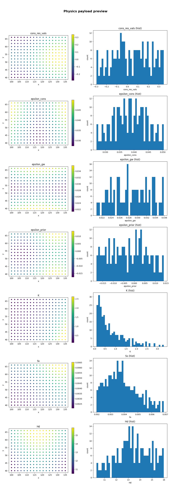
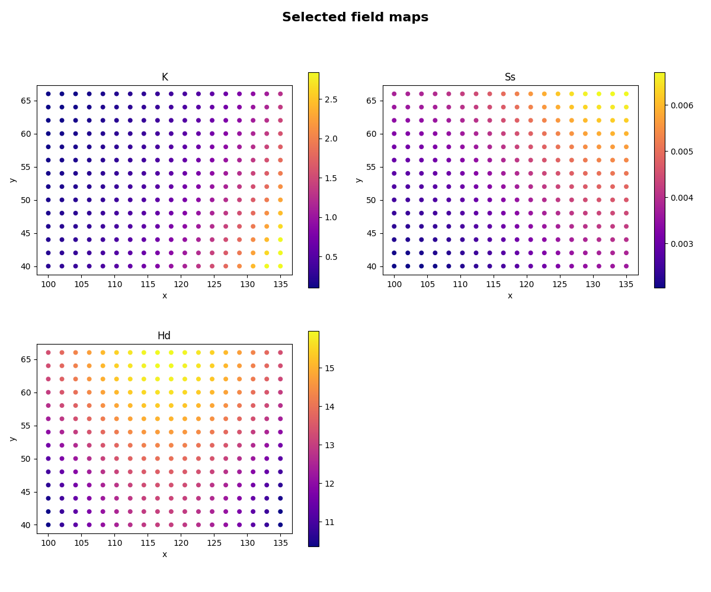
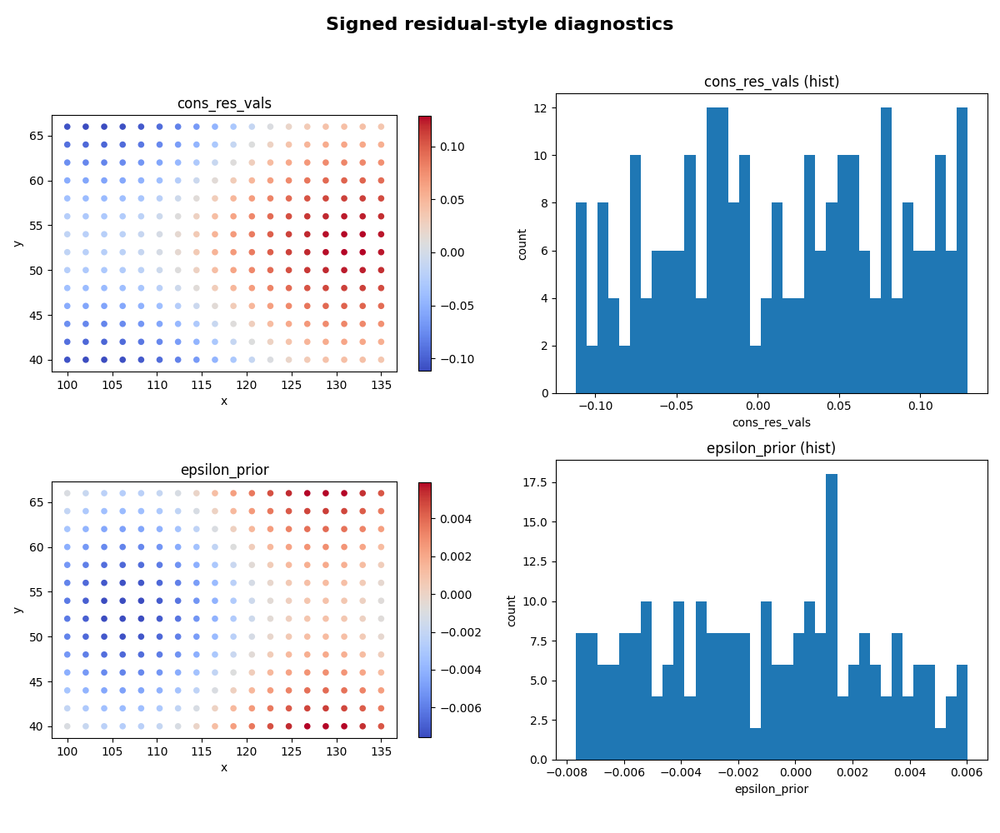
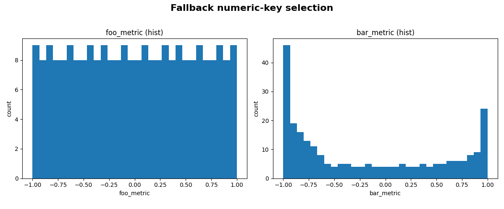

Note
Go to the end to download the full example code.
Plot physics payload values as maps and histograms#
This example teaches you how to use GeoPrior’s
plot_physics_values_in helper.
Unlike the publication-oriented scripts in figure_generation/,
this function is a compact model-inspection utility. It takes a
physics payload dictionary and turns selected arrays into quick
spatial maps, histograms, or both.
Why this matters#
Physics payloads often contain several useful arrays:
residual values,
epsilon diagnostics,
conductivity/storage fields,
thickness-like fields,
and time-scale summaries.
This helper makes them easy to inspect because it can:
choose sensible keys automatically,
plot them as point maps,
plot their distributions,
and work either from explicit coordinates or from a dataset.
Imports#
We call the real plotting helper from the package and feed it compact synthetic payloads and coordinates.
from __future__ import annotations
import tempfile
from pathlib import Path
import numpy as np
from geoprior.models import plot_physics_values_in
Build compact synthetic coordinates and payload fields#
The helper expects a payload dict and, for map mode, either:
explicit coords={“x”: …, “y”: …}
or a dataset from which coords can be gathered.
We start with explicit coordinates for a compact regular grid.
nx = 18
ny = 14
xg = np.linspace(100.0, 135.0, nx)
yg = np.linspace(40.0, 66.0, ny)
xx, yy = np.meshgrid(xg, yg)
x = xx.ravel()
y = yy.ravel()
# Build a few synthetic GeoPrior-like payload arrays.
# They are deliberately chosen to exercise:
#
# - positive fields,
# - near-zero residuals,
# - and signed tension-like values.
cx = (x - x.mean()) / x.std()
cy = (y - y.mean()) / y.std()
K = np.exp(-0.6 + 0.8 * cx - 0.3 * cy)
Ss = np.exp(-5.6 + 0.3 * np.sin(cx) + 0.2 * cy)
Hd = 12.0 + 2.5 * np.cos(cx) + 1.5 * np.sin(cy)
epsilon_cons = 0.03 + 0.01 * np.abs(cx) + 0.004 * np.sin(cy)
epsilon_gw = 0.02 + 0.008 * np.abs(cy) + 0.003 * np.cos(cx)
epsilon_prior = (
0.01 * np.sin(1.5 * cx) - 0.008 * np.cos(1.3 * cy)
)
cons_res_vals = (
0.20 * np.sin(1.2 * cx) + 0.15 * np.cos(1.4 * cy)
)
payload = {
"cons_res_vals": cons_res_vals.astype(float),
"epsilon_cons": epsilon_cons.astype(float),
"epsilon_gw": epsilon_gw.astype(float),
"epsilon_prior": epsilon_prior.astype(float),
"K": K.astype(float),
"Ss": Ss.astype(float),
"Hd": Hd.astype(float),
}
coords = {
"x": x.astype(float),
"y": y.astype(float),
}
print("Payload keys")
for k in payload:
print(" -", k)
print("")
print("Coordinate size")
print("n =", coords["x"].shape[0])
Payload keys
- cons_res_vals
- epsilon_cons
- epsilon_gw
- epsilon_prior
- K
- Ss
- Hd
Coordinate size
n = 252
Plot the default GeoPrior selection as both maps and histograms#
When keys=None, the helper first looks for a preferred GeoPrior
key order:
cons_res_vals
R_cons
epsilon_cons
epsilon_gw
epsilon_prior
log10_tau
log10_tau_prior
K
Ss
Hd
H
and keeps whichever are present.
Here we use mode="both" so each selected key gets:
a point map,
and a histogram.

Focus on a few explicit keys in map mode#
Explicit keys=[...] is useful when you want a shorter,
more targeted inspection page.

Use a signed transform for residual-style quantities#
The helper supports:
transform=”abs”
transform=”log10”
transform=”signed_log10” or “slog10”
or any callable.
Signed log scaling is especially useful for tension-like or residual-like arrays that have both positive and negative values.

Save a figure to disk#
When savefig has no extension, the helper adds .png
automatically.
tmp_dir = Path(
tempfile.mkdtemp(prefix="gp_sg_plot_phys_values_")
)
save_stem = tmp_dir / "physics_payload_view"
plot_physics_values_in(
payload,
keys=["K", "Ss", "Hd"],
coords=coords,
mode="both",
title="Saved physics payload view",
savefig=str(save_stem),
show=False,
n_cols=2,
)
saved_png = tmp_dir / "physics_payload_view.png"
print("")
print("Saved file")
print(" -", saved_png)
Saved: C:\Users\Daniel\AppData\Local\Temp\gp_sg_plot_phys_values_93ovs7hs\physics_payload_view.png
Saved file
- C:\Users\Daniel\AppData\Local\Temp\gp_sg_plot_phys_values_93ovs7hs\physics_payload_view.png
Demonstrate key fallback behavior#
If no explicit keys are provided and none of the preferred GeoPrior keys are present, the helper falls back to any numeric NumPy arrays in the payload dict.
Here we demonstrate that fallback with a tiny custom payload.
payload_fallback = {
"foo_metric": np.linspace(-1.0, 1.0, x.shape[0]),
"bar_metric": np.cos(np.linspace(0.0, 4.0, x.shape[0])),
}
plot_physics_values_in(
payload_fallback,
coords=coords,
mode="hist",
title="Fallback numeric-key selection",
bins=30,
)

Learn how to read the map panels#
A good reading order is:
inspect the field-like quantities such as K, Ss, and Hd;
then inspect epsilon or residual-like quantities;
then compare the histograms to see whether a field is:
tightly concentrated,
heavy-tailed,
or strongly signed.
This is often more useful than jumping directly to a paper-ready multi-panel figure.
Why the coordinate alignment matters#
The helper tries to align coordinates and values conservatively.
It supports three common cases:
equal lengths,
coords shaped like (B*T) with values shaped like (B),
values shaped like (B*T) with coords shaped like (B).
If none of those cleanly match, it truncates both to the minimum length. That keeps quick inspection practical without requiring a full reshaping step every time.
Why quantile clipping matters#
Color limits are computed from clip_q=(q_low, q_high) when
possible.
That helps prevent a small number of extreme values from flattening the contrast in the map panels.
For diagnostics, this is often more informative than using the full raw min/max range.
Why this page belongs in model_inspection#
This helper is not a publication-figure script and it is not an artifact builder.
Its job is to inspect physics payload arrays quickly and safely.
So it belongs naturally with the other inspection utilities.
A natural next lesson#
The clean next page after this is
extract_physical_parameters.py,
because that moves from payload-level visualization to compact
learned-parameter extraction.
Total running time of the script: (0 minutes 21.171 seconds)